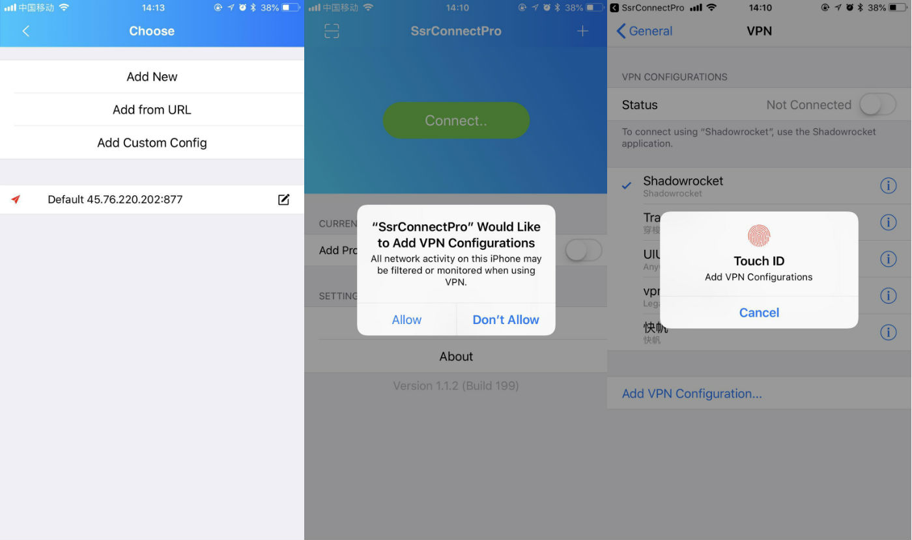

iOS手机配置教程
I. 准备工作
1. 使用App Store下载软件"SsrConnectPro"
2. 将客服提供的二维码（配置码）保存在手机相册中。
II. 配置软件
1. 打开软件后，点击屏幕左上角扫描二维码标识→允许相机权限→点右上角打开手机相册中的二维码→随意设置节点名称后点“OK”
2. 在服务器页面中，选中新加入的服务器（xx.xx.xx.xx）→图标会由灰变红。如图：

3. 随后软件会自动跳转完成以下操作：返回APP主页面点击Connect→自动跳转至iOS设置页面获取VPN授权（需要指纹）→跳转回APP
III. 测试
1. 先使用常用的浏览器打开google.com测试，如连通即成功
2. 如不能访问，请使用系统自带浏览器Safari进行测试
IV. 排错
1. 无法打开软件 - 重新下载安装
2. 无法扫描二维码 - 联系客服获取服务器信息后手动添加（请注意选择同样的加密模式）
3. 未跳出VPN授权 - Stop后重新Connect，仍然不行请重装APP
4. Not Config - 点击APP主页中"Current Online"下的"Add Config"→勾选中服务器（xx.xx.xx.xx），飞机图标会由灰变红
5. Existe Data - 您已经扫描过二维码，按上一条（4）中的方法操作
6. 仍然无法使用，请联系微信客服
其他教程
- © frankieyuan.com
- Design: HTML5 UP